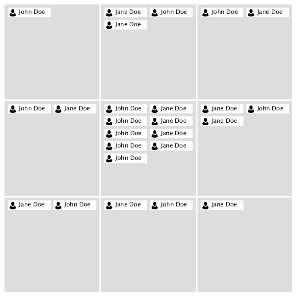

| Oracle Fusion Middleware Data Visualization Tools Tag Reference for Oracle ADF Faces 12c (12.2.1) E52773-01 |
dvt:nBox nBox n box
UIComponent class: oracle.adf.view.faces.bi.component.nBox.UINBox
Component type: oracle.dss.adf.nBox.NBox

A visualization displaying the distribution of a collection items across two dimensions, represented as a set of discrete rows and columns.
<dvt:nBox value="#{nBoxDataModel}" var="node">
<f:facet name="rows">
<af:group>
<dvt:nBoxRow value="row0"/>
<dvt:nBoxRow value="row1"/>
<dvt:nBoxRow value="row2"/>
</af:group>
</f:facet>
<f:facet name="columns">
<af:group>
<dvt:nBoxColumn value="column0"/>
<dvt:nBoxColumn value="column1"/>
<dvt:nBoxColumn value="column2"/>
</af:group>
</f:facet>
<dvt:nBoxNode row="#{node.row}" column="#{node.column}" label="#{node.name}">
<f:facet name="icon">
<dvt:marker shape="human"/>
</f:facet>
</dvt:nBoxNode>
</dvt:nBox>
Animations can be enabled on data change or on initial display by adding af:transition as a child of this component. The following trigger types and transitions are supported:
dataChange: none (default), autodisplay: none (default), autoIndividual cells can be customized (e.g. to configure labeling or background color) via the optional cells facet:
<f:facet name="cells">
<af:group/>
<dvt:nBoxCell column="column0" row="row0" background="#FF0000"/>
<dvt:nBoxCell column="column1" row="row1" background="#00FF00"/>
<dvt:nBoxCell column="column2" row="row2" background="#0000FF"/>
</af:group>
</f:facet>
Note that it is not necessary to specify a dvt:nBoxCellfor every cell in the NBox. Any cells without corresponding dvt:nBoxCell tags will render with default values.
The NBox component supports static grids via explicit enumeration of the columns, rows, and cells (as in the code sample above). Additionally, af:iterator can be used to dynamically populate the grid at runtime:
<f:facet name="columns">
<af:iterator value="#{columnCollectionModel}" var="column"/>
<dvt:nBoxColumn value="#{column.value}"/>
</af:iterator>
</f:facet>
<f:facet name="rows">
<af:iterator value="#{rowCollectionModel}" var="row"/>
<dvt:nBoxRow value="#{row.value}"/>
</af:iterator>
</f:facet>
<f:facet name="cells">
<af:iterator value="#{cellCollectionModel}" var="cell"/>
<dvt:nBoxCell column="#{cell.column}" row="#{cell.row}"/>
</af:iterator>
</f:facet>
When dvt:attributeGroups are used inside a dvt:nBoxNode (or one of its facets), the groupBy attribute can be used to group the NBox nodes together based on one of more of these groups. The groupBehavior can be used to control whether nodes are grouped within each cell or across cells. Groups smaller than a certain percentage of the total can be grouped into an "Other" group using the otherThreshold attribute. The color of this group can be customized using the otherColor attribute.
The columnsTitle and rowsTitle attributes can be used to specify labels for the column and row axes, respectively. Individual columns and rows can be labeled via the label attributes on dvt:nBoxColumn and dvt:nBoxRow. Individual cells can be labeled via the label attribute on dvt:nBoxCell. Lastly, node labels can be specified via the label and secondaryLabel attributes on dvt:nBoxNode.
The NBox can be configured to maximize a single column or row by specifying the maximizedColumn or maximizedRow attributes, respectively. Specifying both attributes will maximize the cell at the intersection of the specified row and column.
Popups and context menus can be displayed using af:showPopupBehavior, which is a supported child of dvt:nBoxNode.
Selection of data items can be enabled using the nodeSelection attribute. Selection can be processed using selectionListener on the server..
| Type | Phases | Description |
|---|---|---|
| org.apache.myfaces.trinidad.event.AttributeChangeEvent | Invoke Application, Apply Request Values |
Event delivered to describe an attribute change. Attribute change events are not delivered for any programmatic change to a property. They are only delivered when a renderer changes a property without the application's specific request. An example of an attribute change event might include the width of a column that supported client-side resizing. |
| Name | Description |
|---|---|
| cells | An unordered list of cells (mapped by row and column value) for this NBox |
| columns | The ordered list of columns for this NBox (from bottom to top) |
| rows | The ordered list of rows for this NBox (from start to end) |
| Name | Type | Supports EL? | Description |
|---|---|---|---|
| attributeChangeListener | javax.el.MethodExpression | Only EL | a method reference to an attribute change listener. Attribute change events are not delivered for any programmatic change to a property. They are only delivered when a renderer changes a property without the application's specific request. An example of an attribute change events might include the width of a column that supported client-side resizing. |
| binding | oracle.adf.view.faces.bi.component.nBox.UINBox | Only EL |
Specifies a binding reference to store a specific instance of UINBox from a backing bean. Set this attribute only to access code in a backing bean. For example, to reference an NBox component in the sample managed bean, use the following code: |
| columnsTitle | String | Yes | Specifies the title for the NBox columns |
| contentDelivery | String | Yes | Valid Values: whenAvailable, lazy, immediate Default Value: whenAvailable Specifies whether to fetch content with page load or after page load. |
| emptyText | String | Yes | The text of the component when empty. |
| groupBehavior | String | Yes | Valid Values: withinCell, acrossCells Default Value: withinCell Specifies how nodes should be grouped. Note that the maximize interaction can not be used on the NBox when grouping across cells. |
| groupBy | String[] | Yes | Specifies (by id) the set of dvt:attributeGroups that should be used for grouping. |
| highlightedRowKeys | org.apache.myfaces.trinidad.model.RowKeySet | Yes | The set of highlighted rows for this component. Each entry in the set is a rowKey. |
| id | String | No | Specifies the identifier for the component |
| inlineStyle | String | Yes | Style of the outer element (enclosing div) of the component |
| legendDisplay | String | Yes | Valid Values: auto, off Default Value: auto Specifies whether a legend should be displayed. The auto will configure and display a legend when dvt:attributeGroups are used. |
| maximizedColumn | String | Yes | Specifies the column that should be maximized. |
| maximizedRow | String | Yes | Specifies the row that should be maximized. |
| nodeSelection | String | Yes | Valid Values: none, single, multiple Default Value: multiple Specifies the selection mode. |
| otherColor | String | Yes | Specifies the color of the group node representing all nodes below the otherThreshold, if one has been specified. |
| otherThreshold | double | Yes | A value from 0-1 representing a percentage of the NBox collection size. When grouping, any groups with sizes below the otherThreshold will be combined into a single group, indicated by the otherColor. |
| partialTriggers | String[] | Yes | The IDs of the components that should trigger a partial update. This component will listen on the trigger components. If one of the trigger components receives an event that will cause it to update in some way, this component will request to be updated too. |
| rendered | boolean | Yes | Default Value: true Specifies whether the component is rendered. |
| rowsTitle | String | Yes | Specifies the title for the NBox rows |
| selectedRowKeys | org.apache.myfaces.trinidad.model.RowKeySet | Yes | The set of selected rows for this component. |
| selectionListener | javax.el.MethodExpression | Only EL | a method reference to a selection listener, the method is invoked when the selected nodes are changed. |
| styleClass | String | Yes | Sets a CSS style class to use for this component. |
| value | Object | Yes | The data model for the NBox - can be an instance of javax.faces.CollectionModel |
| var | String | No | Name of the EL variable used to reference each element of this collection. Once this component has completed rendering, this variable is removed (or reverted back to its previous value). |
| varStatus | String | No | Name of the EL variable used to reference the varStatus information. Once this component has completed rendering, this variable is removed (or reverted back to its previous value). The VarStatus provides contextual information about the state of the component to EL expressions. For components that iterate, varStatus also provides loop counter information. Please see the this component's documentation for the specific properties on the varStatus. The common properties on varStatus include:
|